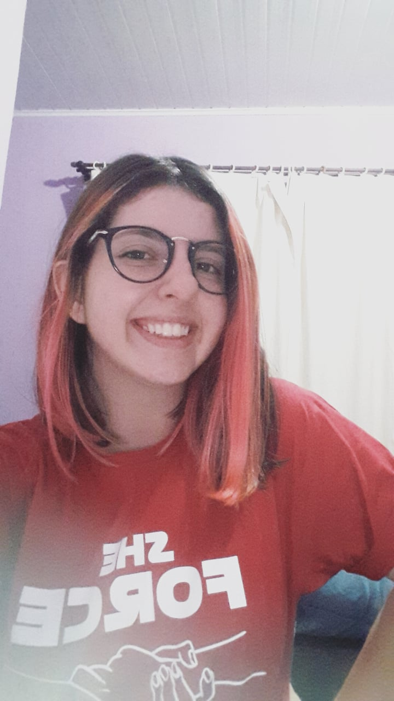
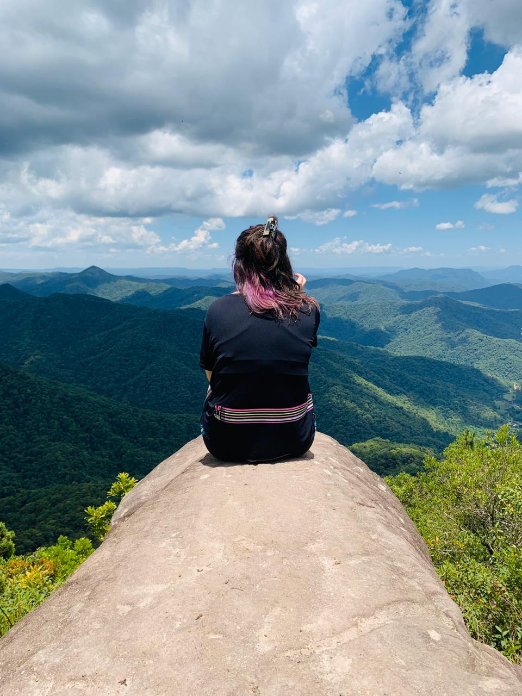
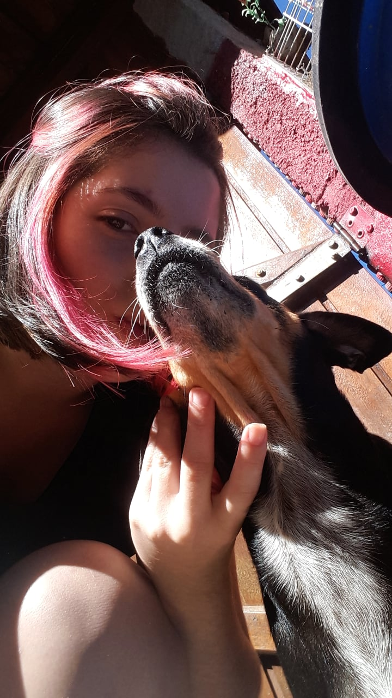

Evelyn Yasmin Pereira

|  |
Formação Acadêmica● 2020 - E.E.B Padre José Maurício, Garcia - Blumenau /SC (Ensino Médio Cursando 3º Ano). ● 2018/2019 - Aprendizagem em Serviços Administrativos, ligada a empresa Pittol Calçados, Santa Catarina, SENAC/SC, ● 2019 - Curso de C# - BluSoft - 480 horas. Experiência Profissional
|

Um pouco mais sobre mim
|  |
NaturezaTudo que está ligado com a natureza, sou apaixonada!! Adoro fazer trilhas, caminhadas. É sobre ver beleza em todos lugares. |
|  |
AnimaisEssa é minha cachorra chamada Lilica, eu sou apaixonada por animais e principalmente por dogs Eles já nascem sabendo amar de um jeito que nós levamos a vida inteira para aprender... |